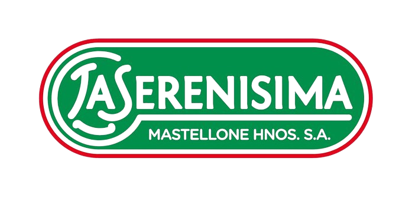

Establecimiento:
Año analizado:

La presente devolución se realizó con la Herramienta de Cálculo de Balance de Carbono para el sector Lácteo (PACN - Calculador Lácteos V.1.3, 2024), desarrollada mediante la participación voluntaria de diferentes productores, asociaciones, empresas y cámaras sectoriales argentinas.
El Programa Argentino de Carbono Neutro (PACN) tiene como objetivo identificar factores de emisión y perfiles ambientales locales para obtener cálculos precisos de la huella de carbono.
El pack de herramientas del sector lácteos del PACN se ofrece de manera gratuita a los actores productivos interesados y se encuentra disponible en el portal web del programa.
Secuestro: kg CO₂e / kg FPCM
Huella calculada a la salida del tambo